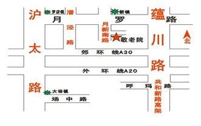

新闻速递
金色晚年敬老院班车调整通知金色晚年敬老院班车调整通知金色晚年敬老院班车调整通知
2015-08-29
金色晚年敬老院班车调整通知
金色晚年敬老院定点班车开设已近十年，期间作了多次调整。现经过院部考虑，综合家属意见后，对班车再次作出调整。从2015年8月19日起，取消地铁1、7号线终点站接送，时间改为每月第一、第三个周六，地点改为以下六处：
8:30 天钥桥路 380 弄 2 号（原残联门口）发车
8:55 新村路338号（同济医院对面）
9:15 闸北公园北宋园茶馆门口（722、916、322路汽车站）
9:30 广中路水电路口 （车停在水电路上，广中路往北50米）
9:45 江湾地铁站（加油站出口处）
10:00 地铁3号线江杨北路终点站出口（车停在江杨北路上）
10:15 预计到达金色晚年敬老院
13:00 金色晚年敬老院出发沿原路返回
备注：1、为避免错过班车，请住养人员家属提前10分钟等候。如因道路不畅，造成晚点，请各位家属见谅。
2、驾驶员肖先生，手机号为13472624126
3、车程全长约2小时
4、如有好的建议可与办公室联系。咨询电话：56931631、56932524
金色晚年敬老院 2015.8.15联系我们 :

地铁1号线富锦路转宝山21路；
地铁3号线江杨北路转宝山23路；
地铁7号线罗南新村或美兰湖转宝山23路。新镇车站下车后沿月新南路往南150米左转即到（见指示牌）。具体情况可来电咨询。